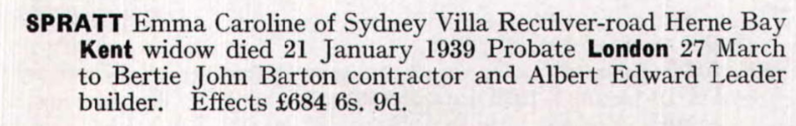
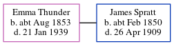

Emma Caroline Spratt (née Thunder) cAug 1853 - 1939
[ Home ] | [ Calendar ] | [ Surnames Index ] | [ Errors ] | [ Family History ]Emma Thunder, the wife of James Henry Spratt (the great-great-uncle of Nigel Horne), was born in Herne, Kent, England c. Aug 18531 and baptised there at St Martin on 4 Sept 1853. She married James (an agricultural labourer) at St Martin, Kentish Town, London, England on 1 Jan 18853.
During her life, she was living in Beltinge, Kent, England on 5 Apr 18915; at Rising Sun, 103 Reculver Road in Beltinge on 31 Mar 19016, in 1902 and in 1903; and at Sidney Villa, Reculver Road in Beltinge in 19094, on 2 Apr 19117 following the death of her husband on 26 Apr 1909 and in 1939.
She died on 21 Jan 1939 in Blean, Kent, England2.
Citations
- England & Wales births 1837-2006 - Findmypast
- England & Wales deaths 1837-2007 - Findmypast
- England & Wales Marriages 1837-2005 - Findmypast
- From her husband's probate
- 1891 England, Wales & Scotland Census - Findmypast (was age 37 and the wife of the head of the household)
- 1901 England, Wales & Scotland Census - Findmypast (was age 47 and the wife of the head of the household)
- 1911 Census for England & Wales - Findmypast (was age 57 and the head of the household)
Media
Emma Caroline Thunder - Probate Notice

1891 England, Wales & Scotland Census Transcription - GBC-1891-0005762864
1891 England, Wales & Scotland Census - GBC/1891/0005762865
England & Wales births 1837-2006 - BMD/B/1853/3/AZ/001002/069
England & Wales marriages 1837-2005 - BMD/M/1885/1/AZ/000229/099
England & Wales deaths 1837-2007 - BMD/D/1939/1/AZ/001083/120
1901 England, Wales & Scotland Census - GBC-1901-0006243968
1911 Census for England & Wales - GBC/1911/RG14/04358/0287/1
England Births & Baptisms 1538-1975 - R_884304671
Kent Baptisms - GBPRS/CANT/B/96127612
Family Tree
Map
Generated by ged2site. Last updated on Jul 3, 2024
Known Issues
Baptism information not used to determine a parent
Residence record for 1902 contains no citation
Residence record for 1903 contains no citation
Residence record for 1939 contains no citation
Apr 5, 1891: not living at same address as spouse James Spratt ('Beltinge, Kent, England'/'Rising Sun, 103 Reculver Road, Beltinge, Kent, England')
No records of living with anyone